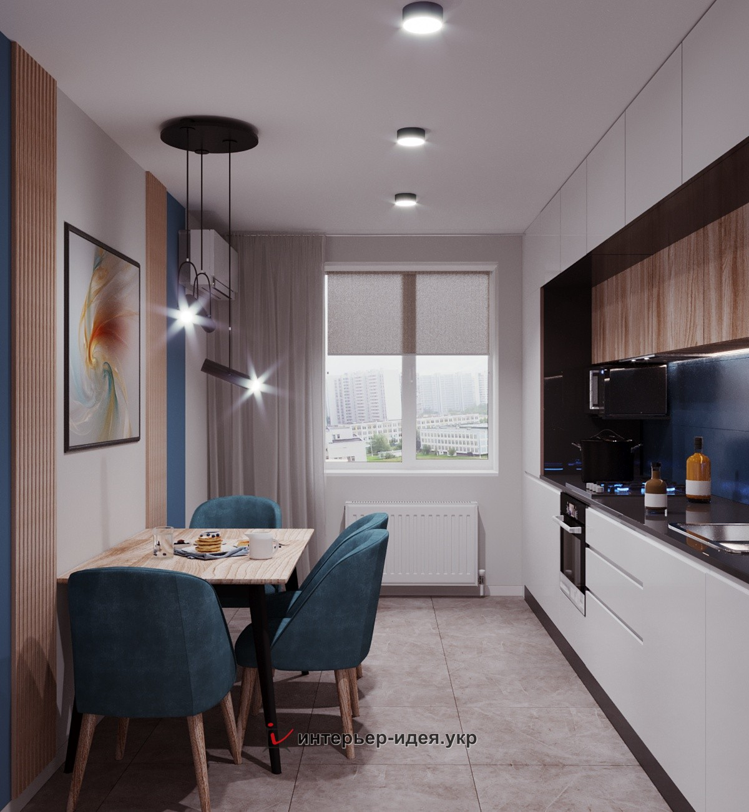
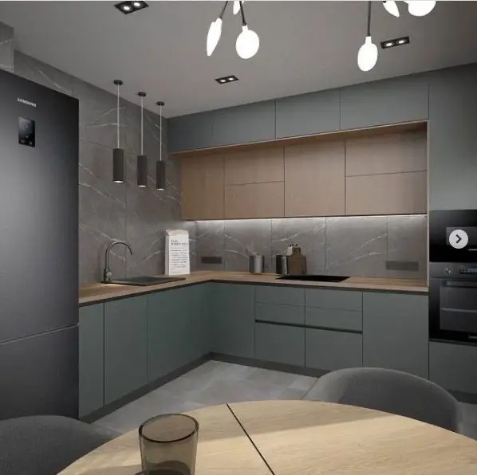
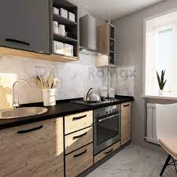
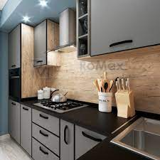

Кухни
|  |
 |
 |
 |
| Кухня "Родос" |
Кухня "Софи" |
Кухня "Родос Люкс" |
Кухня "Альта" |
| 3100 грн/за м.п |
2485 грн/за м.п |
3050 грн/за м.п |
4910 грн/за м.п |
Дизайн и удобство
Грамотно продуманный дизайн кухни позволяет при установке гарнитура сохранить
больше пространства даже в небольшом помещении столовой, создать уютную атмосферу.
Для хозяйки дома важно, чтобы мебель на кухне была удобной для хранения посуды, бытовой техники,
приготовления пищи и ее не сложно было чистить. А для семьи – чтобы на ней приятно было обедать
и принимать гостей.
Именно такие кухни предлагает для своих заказчиков наш сайт.
На главную